TGVelo Quality Label for Electric Bicycles
KU Leuven Technology Campus Ghent.
D. Callebaut, J. De Maeyer, B. Rotthier, J. Cappelle, E. Motoasca
Electric
Bicycle
Quality
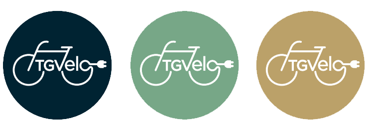
Jeroen De Maeyer Eurobike 2016
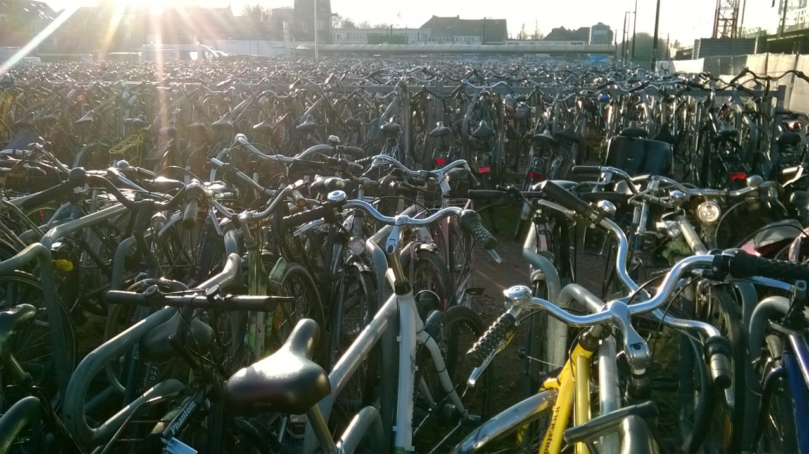
Electric bicycle quality
- Introduction
- Combining existing knowledge
- New quality framework
- Proven in practice
- Conclusion
TGVelo Project
Project funded by Flemisch governement and in coorperation with 26 Belgian companies/organisations
TGVelo Team:
Dries Callebaut, Jeroen De Maeyer, Bram Rotthier, Jan Cappelle, Emilia Motoasca
Contact:
tgveloteam@gmail.com
jan.cappelle@kuleuven.be
emilia.motoasca@kuleuven.be
Future of mobility
Energy efficient and clean
↓
Specialized vehicles for different applications
↓
Shared vehicles (mobility as a service)
European EPAC Sales (1000 units)
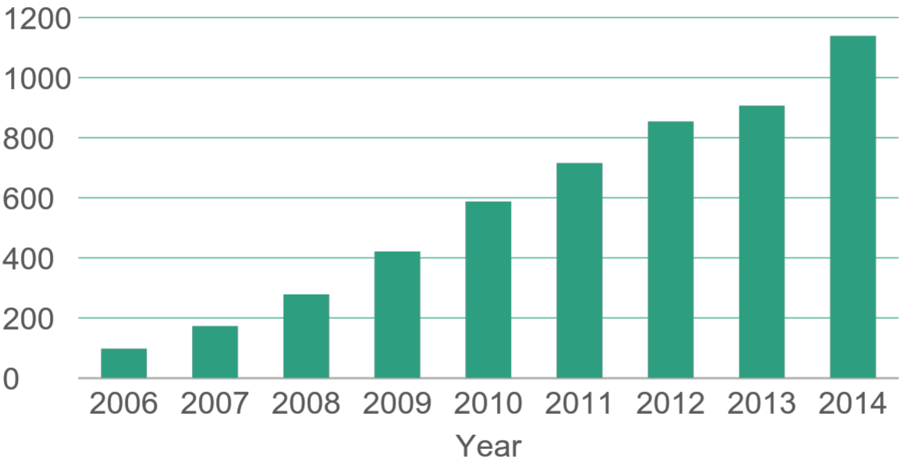
CONEBI European bicycle market (2015 edition)
2. Combining Existing Knowledge
Why a new quality framework?
Example from tender:
Hub gear with at least 8 gears (type Shimano or similar).
Very specific. Brand name is used as quality level.
-> speed @50 rpm and @70 rpm, useability
Why a new quality framework?
Example from tender:
Plastic mudguards.
Very specific detail, no quality level given.
-> Impact resistant? Water protection?
TGVelo main principles
- Quantify quality
- Repeatable measuring of quality
- Integral approach to quality
Integral: usability!
Solution independent (1-4 wheels, up to 50 kg, ...)
Existing knowledge
- International policy organizations
- Pedelec test laboratories
- Light electric vehicle users
- Cycling industry
Organizing quality
- General info: design speed, net available energy, size, ...
- Useability: theft protection, controllability, luggage, ...
- Reliability: impact, redundancy, maintenance, ...
- Safety: visibility, brakes, tires, ...
TGVelo Quality Label
- General info
- Useability
- Reliability
- Safety
General info
- Design speed
- Typical resistance
- Net available energy
- Maximum slope
- Charging time
- Speed @50 and @70 rpm
- Body length range
- Posture
Example: speed @50 and @70 rpm
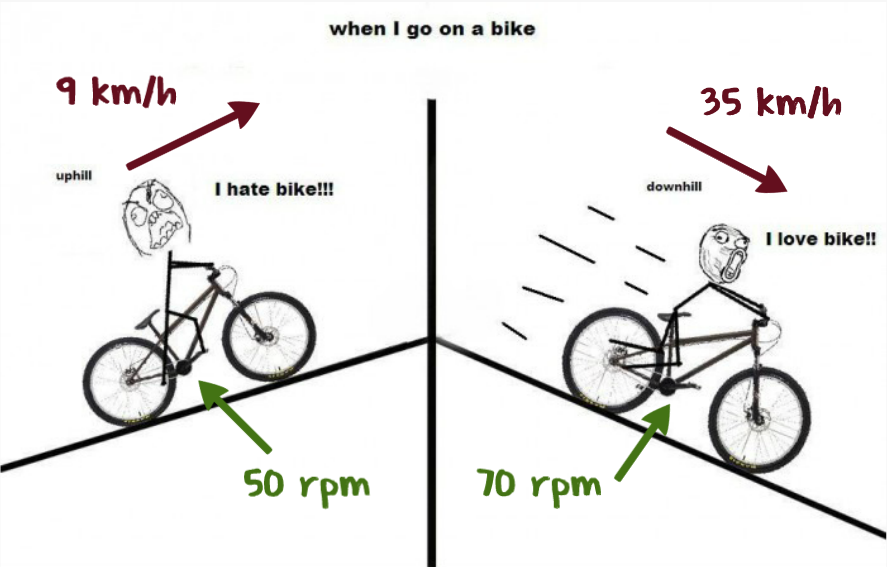
Example: design speed
Net available energy (standard conditions defined)
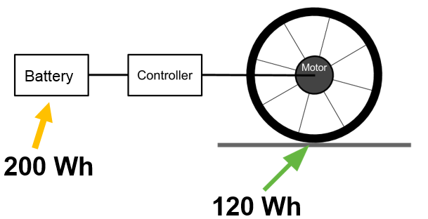
Reliability
- Mounting
- Impact
- Tire punture
- Electric drive train
- Salt- and waterspray
Example: tire puncture

Useability
- Theft protection
- Ease of operation
- Motor control
- Inserting/removing battery
- Kickstand
- Shimmy
- Start Stop
- Walking with bicycle
- Vibration comfort
- Noise
- Mudguards
- Wheather protection
Example: ease of operation
- Lights
- Gear change under load
- Gear change at zero speed
- Operation with gloves
- Operation while looking forward
- ...
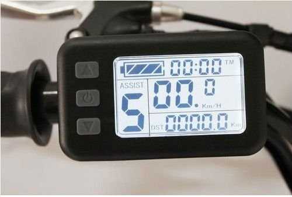
Safety
- Visibility
- Lights
- Brake performance
- Tire slip
- Bell
- Chrash protection
Example: brake performance

TGVelo Quality Label
- General info:
- Useability:
- Reliability:
- Safety:
Net available energy
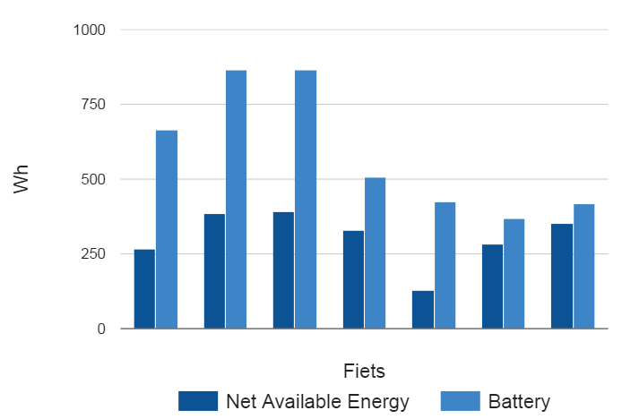
Who fits on the bike
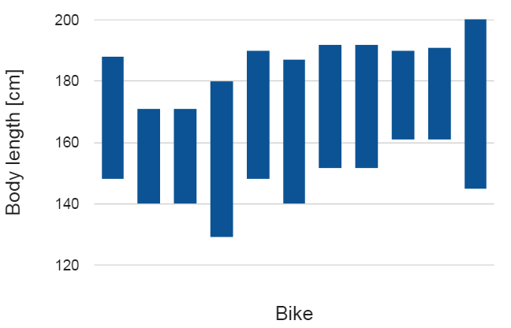
Useability: kickstand
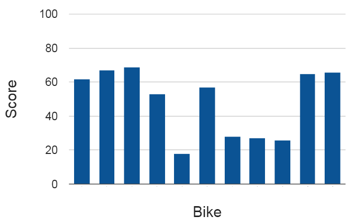
Useability: motor control
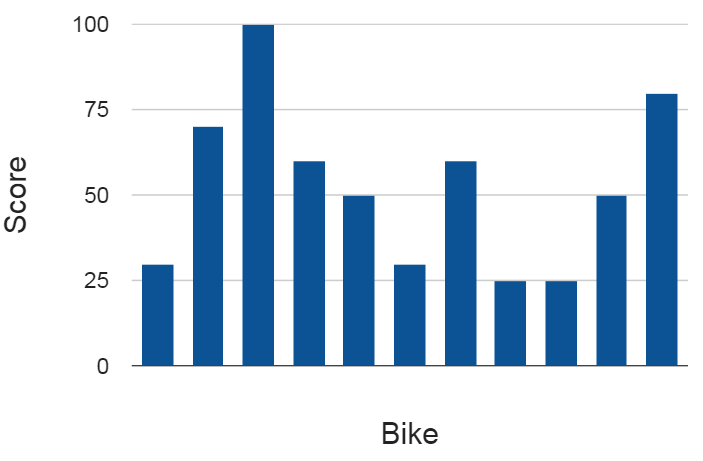
Reliability: mounting
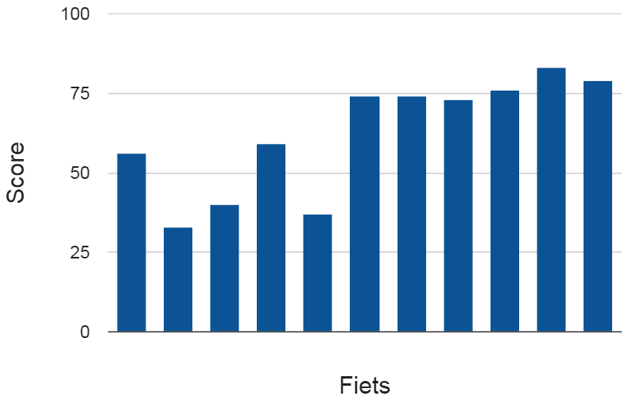
TGVelo main principles
- Quantify quality
- Repeatable measuring of quality
- Integral approach to quality
Integral: usability!
Solution independent (1-4 wheels, up to 50 kg, ...)
Conclusion
Help people and organizations to measure the quality of electric bicycles.
TGVelo main principles
- Quantify quality
- Repeatable measuring of quality
- Integral approach to quality
Conclusion
- Test procedures publicly available (at the moment only in dutch).
- TGVelo test centre